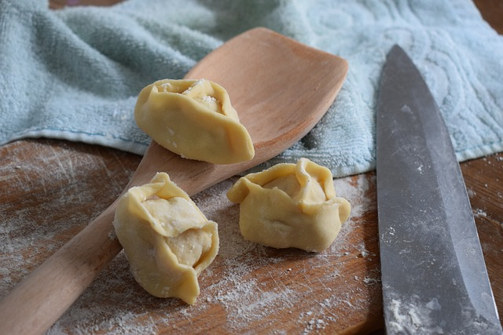

Pilmeni Recipe

Pelmeni are meat-filled parcels that are usually boiled or fried before being served with sour cream or in a broth. Unlike vareniki and pierogi, pelmeni are often filled with raw meat that is then cooked inside the tightly fastened dumpling.
Pelmeni became a staple of Russian cuisine during the period of Russian expansion into the Ural Mountains and Siberia. Pelmeni also have deep roots in the traditions and folklore of the Komi region of northwest Russia and figure prominently in Komi cuisine. The name itself was borrowed from the language of the Komi-Permyaks.
Pelmeni can be served as a main dish for lunch or dinner, either smothered in butter or prepared Siberian-style, which involves sprinkling them with vinegar and adding freshly ground pepper for extra flavor.The filling can be minced meat (pork, lamb, beef, fish or any other kind of meat, venison being particularly traditional for colder regions) or mushrooms, or a combination of the two. The mixing together of different kinds of meat is also popular. In European Russia, ground beef is used and mushroom-filled pelmeni are also accepted.
Ingredients:
- 2 cups all-purpose flour
- 1/2 cup water
- 1/2 tsp salt
- 2 tbsp cooking oil
- 250g ground beef
- 250g ground pork
- 1 small onion, finely chopped
- 2 cloves garlic, minced
- Salt and pepper to taste
- Butter, sour cream and chopped parsley (to garnish)
Steps:
- To prepare the dough, combine all dough ingredients in a mixing bowl and kneed the dough until a smooth dough ball forms, about 10 minutes. Cover, and set aside, letting the dough rest until ready to use.
- While the dough is resting prepare the filling by mixing ground meat, finely chopped onion, pressed garlic and season everything with salt and pepper. Mix well.
- Divide the dough into 4 equal portions and roll each portion out into 1/8″ thick over a lightly floured non-stick surface.
- Using jar top or a small glass (about 2.5 inch in diameter) cut out the circles of the dough and place 1/2 teaspoon of the filling on each circle.
- Simply fold the edges together and seal pressing tightly, then seal the two endings together as well. Repeat to use the remaining of the filling and dough.
- Place the finished pelmeni on a well dusted cutting board (make sure they don’t touch each other) until ready to boil or freeze for 1 hour uncovered. Then transfer pelmeni into a large plastic bag. They would last for months.
- Bring a large pot of salted water to a boil, add bay leaves and peppercorns.
- Place pelmeni in boiling water. After they float to the top, cook for about 5 more minutes, then remove them with a slotted spoon to a bowl.
- Add butter and mix to coat pelmeni in butter.
- Serve garnished with sour cream and fresh parsley.
Home